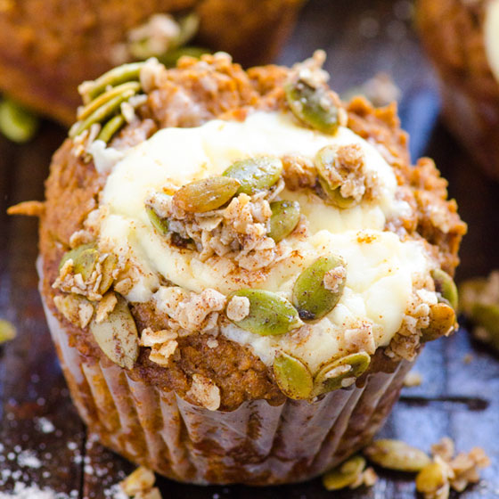
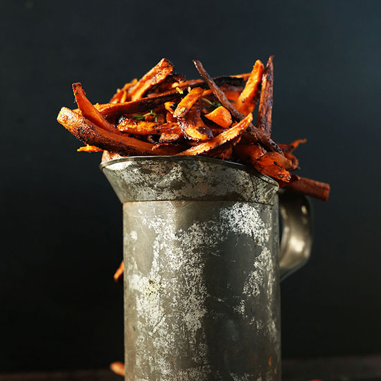
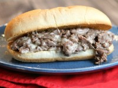

Recipes!
Whole Wheat Pumpkin Cream Cheese Muffins

Wet Ingredients:
- 1 + 1/4 cups pumpkin puree (not pumpkin pie filling)
- 1/2 cup almond milk, unsweetened (any milk works)
- 1/2 cup egg whites or 2 large eggs
- >9 Medjool dates, pitted
- 1 tsp pure vanilla extract
Dry Ingredients:
- 1 tbsp pumpkin pie spice
- 2 tsp baking powder, aluminum free
- 1 tsp baking soda
- 1/2 tsp salt
Filling:
- 3/4 cup cream cheese, organic (low fat if you wish)
- 2 tbsp maple syrup
Cinnamon Pepita Topping:
- 1/4 cup pumpkin seeds
- 2 tbsp quick or rolled oats
- 2 tbsp maple syrup
- 1 tbsp coconut oil
- 1/2 tsp cinnamon
- 1/8 tsp salt
Directions
- Preheat oven to 350 degrees F and spray non-stick 12 muffin tin with cooking spray. Set aside.
- In a food processor or a powerful blender, add Wet Ingredients and process until smooth. Mainly look for all dates to be processed. Set aside.
- In a small mixing bowl, add Filling ingredients and mix well. Set aside.
- In another small mixing bowl, add Cinnamon Pepita Topping ingredients and mix with a fork until well combined. Set aside.
- In a large mixing bowl, whisk to combine Dry Ingredients. Add Wet Ingredients from the blender into the bowl and gently mix just enough to combine. Do not over mix otherwise muffins won't rise properly. Fill each tin almost full with batter (I used regular ice cream scoop), make a small well with a fork, add a small dollop of Filling (I used small cookie dough scoop & it's fine if cream cheese is sitting on top of the batter), sprinkle with Cinnamon Pepita Topping and bake for 25 minutes or until a toothpick inserted in the centre comes out clean. Let muffins cool for about 5 minutes and transfer to a cooling rack to cool off completely.
source: http://ifoodreal.com/whole-wheat-pumpkin-cream-cheese-muffins/
Cajun Sweet Potato Fries

Ingredients
- 2 large sweet potatoes, scrubbed clean (organic when possible)
- 2 Tbsp olive, canola or melted coconut oil
- 1/2 tsp sea salt
- >1.5 tsp garlic powder
- 1.5 tsp smoked paprika
- 1.5 tsp dried oregano
- 1 tsp dried (or 2 tsp fresh) thyme
- 1/4 tsp black pepper
- 1/4 tsp cayenne pepper*
- OPTIONAL: 1 Tbsp sugar of choice (coconut + cane are best)
Directions
- Preheat oven to 425 degrees F.
- Leave the skin on and cut sweet potatoes into thin, even match sticks with a very sharp knife.
- Transfer to two baking sheets and drizzle with olive oil. Then sprinkle with seasonings, sugar and toss.
- Transfer fries to 1 large or 2 baking sheets and arrange in a single layer to ensure they crisp up.
- Bake for 15 minutes and flip/stir to cook on the other side. Bake for 10 to 15 minutes more, or until brown and crispy. You'll know they're done when the edges are dark brown and crispy.
- Remove from oven and either serve as is, or drizzle with a bit of maple syrup or honey to offset spiciness.
- Serve plain or with your favorite dip, such as whiskey bbq ketchup.
source: http://minimalistbaker.com/cajun-baked-sweet-potato-fries/
Cajun Sweet Potato Fries

Ingredients
- 2 large sweet potatoes, scrubbed clean (organic when possible)
- 2 Tbsp olive, canola or melted coconut oil
- 1/2 tsp sea salt
- >1.5 tsp garlic powder
- 1.5 tsp smoked paprika
- 1.5 tsp dried oregano
- 1 tsp dried (or 2 tsp fresh) thyme
- 1/4 tsp black pepper
- 1/4 tsp cayenne pepper*
- OPTIONAL: 1 Tbsp sugar of choice (coconut + cane are best)
Directions
- Preheat oven to 425 degrees F.
- Leave the skin on and cut sweet potatoes into thin, even match sticks with a very sharp knife.
- Transfer to two baking sheets and drizzle with olive oil. Then sprinkle with seasonings, sugar and toss.
- Transfer fries to 1 large or 2 baking sheets and arrange in a single layer to ensure they crisp up.
- Bake for 15 minutes and flip/stir to cook on the other side. Bake for 10 to 15 minutes more, or until brown and crispy. You'll know they're done when the edges are dark brown and crispy.
- Remove from oven and either serve as is, or drizzle with a bit of maple syrup or honey to offset spiciness.
- Serve plain or with your favorite dip, such as whiskey bbq ketchup.
source: http://www.recipegirl.com/2015/01/22/philly-cheese-steak-sandwiches/